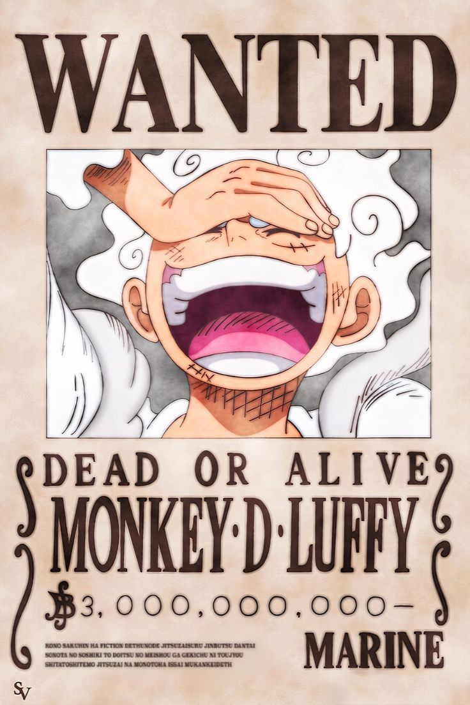
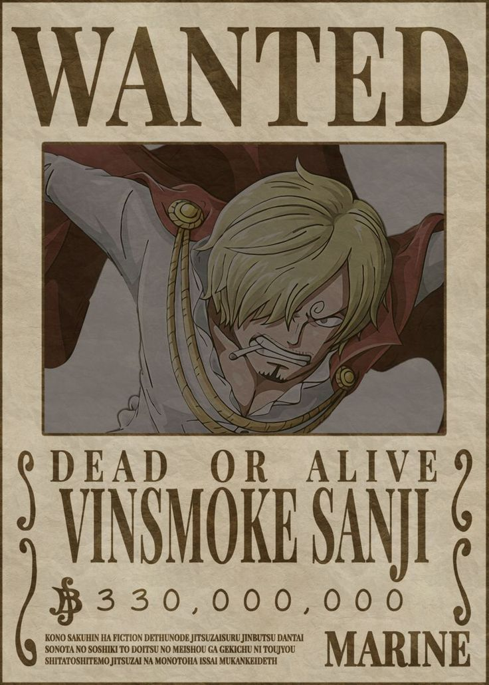
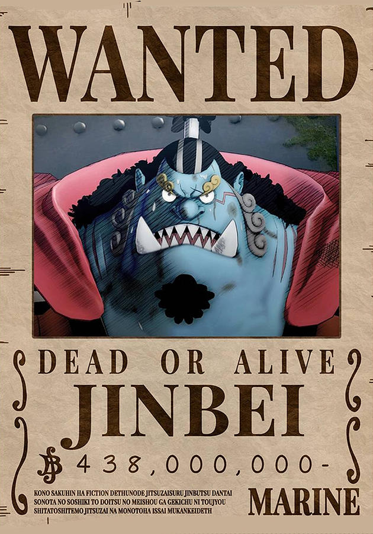

All Character
My Contact
 is the captain of the Straw Hat Pirate and the main protagonist of the One Piece series. At age seven, he admires and tries to join the pirates of the "Red Haired" Shanks. Ridiculed and rejected, he inadvertently eats their treasure, the Paramecia-type Gum-Gum Fruit

Roronoa Zoro
is a swordsman who uses up to three swords simultaneously, holding one in each hand and a third in his mouth.[ch. 3, 5, 28] To fulfill a promise to Kuina, his deceased childhood friend and rival, he aims to defeat "Hawk-Eye" Mihawk and become the world's greatest swordsman.[ch. 5, 50] Traveling the seas in search of Mihawk and making a living as a bounty hunter, he becomes infamously known as "Pirate Hunter" Zoro
Sanji
Born as a prince of Germa Kingdom, Vinsmoke Sanji is routinely ridiculed by his genetically enhanced siblings and is locked away by his father Judge for being a disgrace. With help from his sister Reiju, he escapes and flees Germa, a floating kingdom composed of several ships, after it enters the East Blue and his father permits it.
Jinbei
is a yakuza-esque whale shark-type fish-man. A master of Fish-Man Karate , he is capable of manipulating water as if it were a tangible cloth. Jimbei can communicate with fish, an ability more usually associated with merfolk, and enlist the help of whale sharks.